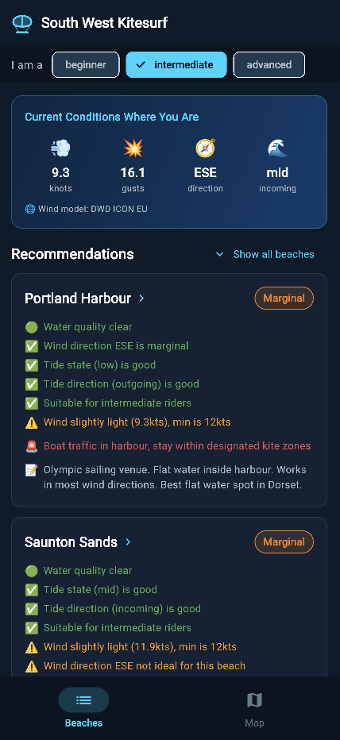

Weymouth Bay is a wide, gently curving bay facing south into the English Channel, flanked by the Isle of Portland to the south-west and the chalk cliffs of White Nothe to the north-east. The town beach at Weymouth is the most accessible stretch, but for kitesurfing the most commonly used sections are Overcombe (a couple of miles east of the town centre, where the bay opens out) and Bowleaze Cove (just beyond Overcombe, particularly good for south-easterly winds). A Weymouth & Portland Kitesurf Club permit is required to kite within the bay.
The best winds are south to south-westerly, which blow cross-onshore across the bay and generate a moderate, consistent chop on the open sand. South-easterly winds work well particularly at Bowleaze Cove, where the cove orientation provides a cleaner angle. Northerly and easterly winds are offshore and should be avoided entirely — there is nothing to stop you drifting out into the shipping lanes of the English Channel if you lose your kite. The Venturi effect from the nearby Isle of Portland can accelerate southerly winds noticeably at the western end of the bay.
Tides matter at Weymouth. Mid to high is the preferred window — as the tide rises, the sandy bay deepens and provides more consistent conditions. At low tide the beach extends far out, rocks and sand bars are exposed near the pier, and the usable kiting area shrinks. Avoid the area immediately west of the pier at all times, where the old pier structure creates a hazard.
This is primarily an out-of-season spot for kitesurfers. From May to September, Weymouth Beach is one of Dorset's busiest tourist beaches — swimmer density and beachgoer pressure make launching genuinely difficult and dangerous. Autumn through spring, with the beach emptied out and the southerly sea breezes still running, is a far better time to come here.
CS Boardsports, based at nearby Portland Harbour, is the local BKSA-recognised kitesurf school for the Weymouth area. They offer beginner through to advanced tuition in the sheltered harbour environment just a few minutes away — a better environment for learning than the open town beach.
Weymouth town centre is well signed from the A354. For Overcombe and Bowleaze Cove, follow the seafront road north-east from the town centre (Preston Road). Overcombe has a large Dorset Council beach car park (281 spaces) with charges 8am–6pm daily: 30 mins £1.70, 1 hr £3.20, 2 hrs £4.80, 3 hrs £6.30, 4 hrs £7.90, 10 hrs £15.80. Free after 6pm. Pay by cash or JustPark. Bowleaze Cove has its own car park adjacent to the Riviera Hotel.
Also worth checking: Portland Harbour (3 miles south-west, flat water in almost any wind, better for beginners), Chesil Beach (immediately south of Portland Harbour, open ocean exposure for advanced riders), and Kimmeridge Bay (12 miles east, advanced wave spot on the Jurassic Coast).
Storm overflow data for Weymouth Beach is monitored in real time by Wessex Water via their telemetry network. Current water quality status — including active sewage discharges and recent spill alerts — updates automatically in the live forecast app.
Wind, tide and forecast — updated every hour

Open live forecast →